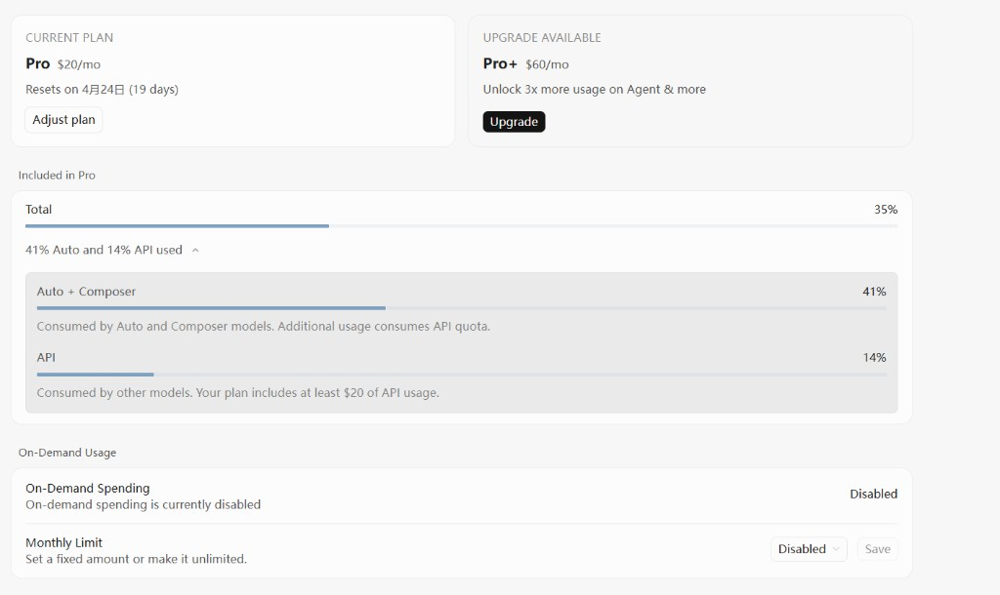
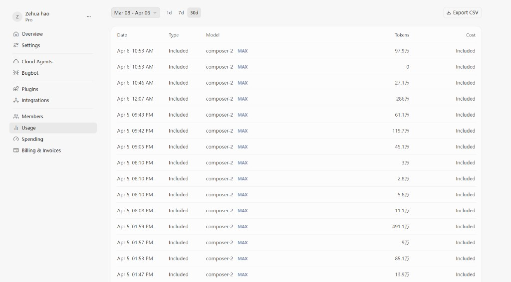
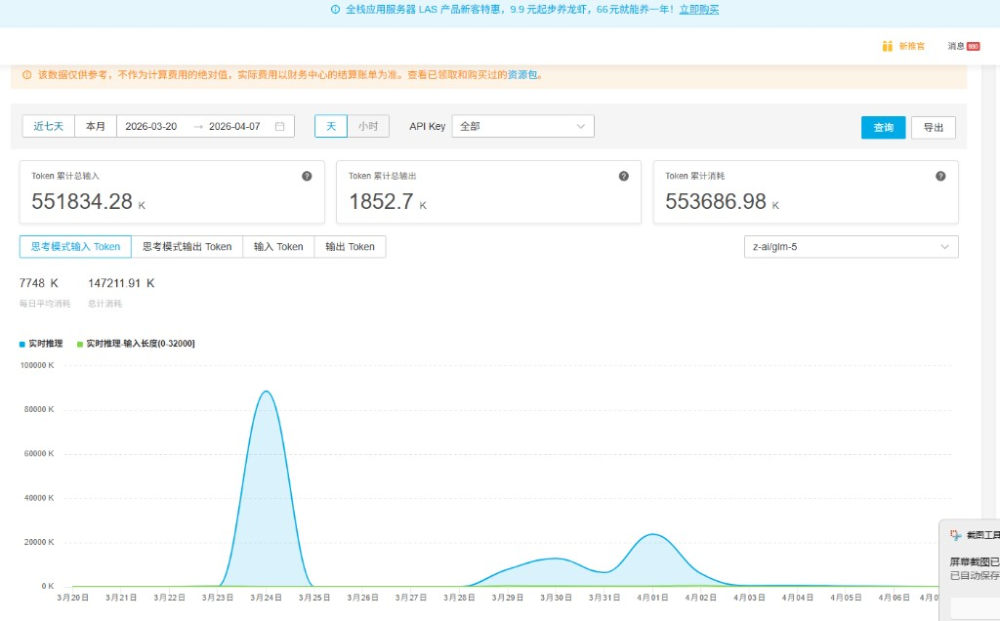

Show me your usage Cursor 订阅与用量自证
本专栏用于公开、可核对的使用痕迹：说明维护本仓库时在 Cursor 上确有付费会员与真实消耗。
Cursor 为 Cursor, Inc. 产品，与 Anthropic 及 Claude Code 官方无隶属关系；截图仅证明编辑侧投入，不构成对任何品牌的背书或广告。
为什么要有这个专栏
讨论 AI 编程助手与课程站建设时，读者有时会关心：写的人自己用不用、用多深。把订阅档位与用量页截屏放在站内，是一种简单、可复查的透明做法。
订阅与套餐内用量概览
以下为账户后台界面截图：可见 Pro 档位、重置周期说明，以及 Auto + Composer 与 API 分项占用比例。

用量明细（历史请求）
以下为 Usage 页面表格节选：可见模型名称、Token 量级与 Included 计费类型。数字会随使用变化，本页不保证与当前线上一致。

七牛云：模型推理 Token 用量
除编辑器侧 Cursor 用量外，本站维护者在通过 七牛云 使用模型推理时，也会在控制台看到累计输入/输出 Token、按日曲线等统计。下图为控制台节选（模型、时间范围以界面为准），用于说明 API / 云厂商侧同样留有可对账的用量痕迹。
七牛云官网：https://www.qiniu.com/

隐私与合规说明
- 截图已避免展示邮箱、订单号、完整支付信息等敏感字段；若界面改版导致信息外露，将及时撤换图片。
- 本仓库主题仍是 Claude Code 学习；Cursor、七牛云等仅作为用量自证所涉产品出现在本专栏，不构成对其的商业背书。
- 欢迎在自己的项目里发起同类 Show me your usage 专栏，形成透明与互信习惯。